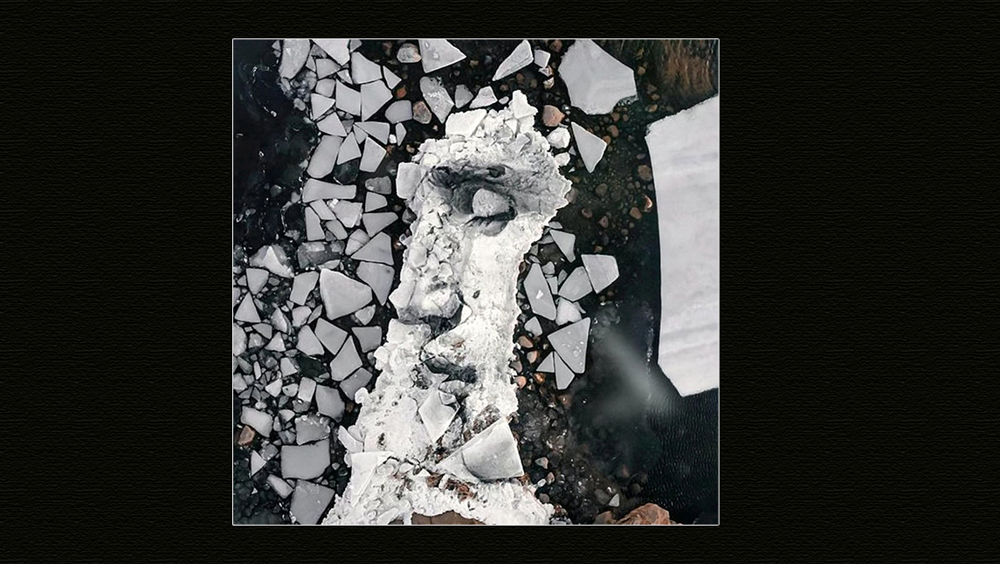

Vivimos a través del arte, sanamos a través del arte, y también la naturaleza y nosotrxs mismxs somos fuente de creación: el arte siempre encuentra la forma de aparecer. Es por eso que, a lo largo de la historia, y de las formas más diversas, las producciones artísticas son una constante de la humanidad. Sin embargo, no dejamos de sorprendernos con la creatividad para hallar nuevas formas de transmitir, y hoy en Bindi te mostramos unos retratos que te van a volar la cabeza.
David Popa es el autor de las obras de carbón hechas sobre el hielo flotante de Finlandia. El artista nació en Nueva York y ahora, desde su hogar en Finlandia, utiliza la técnica ancestral de los pigmentos naturales para aportar belleza a nuestro mundo.
El arte de David está íntimamente relacionado con la naturaleza, tanto por los materiales para lo que aplica cualquier elemento natural local con el que pueda crear -como carbón vegetal y conchas marinas molidas-, como por su lienzo: el medio ambiente que nos rodea. Una de sus obras más llamativas es la de un dibujo de una cara sobre un bloque de hielo flotante, que se va fragmentando. Con un poco de hielo, carbón y sal, este joven logra imprimir verdaderas obras de arte en la naturaleza que, como sabemos, tienen la característica de ser efímeras en contenido, pero con un profundo impacto y significado.
Lo más inspirador de su método es la manera con la que el artista se las ingenia para crear en conjunto con la naturaleza, descubriendo procesos, materiales, y nuevas formas de arte. Si te interesa el land art y querés ver más de las increíbles obras de David Popa, podés seguirlo en su instagram (@david_popa_art) para ver todas las fotos y videos que lo registran.